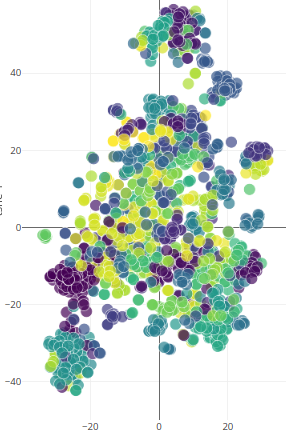
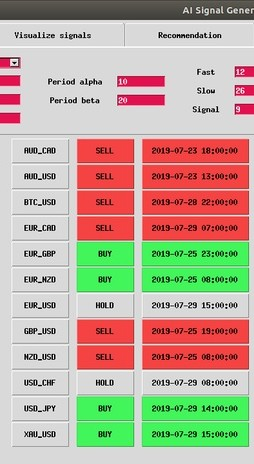
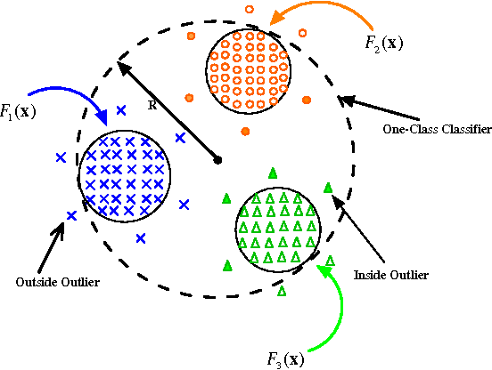

categories
Design
(1)
Guide
(5)
pages
about me
Resume
My works
My blog
contact me
Sample Page
Sample Page
Home
Resume
My Works
My Blog
Contact Me
Kenneth Ezukwoke
M.Sc. Machine Learning and Data Mining
My works
all
Advance ML
NLP
Timeseries forecasting
Anomaly detection
kernel methods
KMeans • PCA • SVDD • LR
Active & Online Learning
• kernel Active/Online Learning
Transfer Learning and Optimal transport
• Domain Adaption
URL Classification
SVM • Random Forest
RecSystem with Graph Mining and Unsupervised ML
Graph Mining • PCA-KMeans

Project book insight
Plotly dash • publication trend
Forecasting 1.0
Deep Forecasting Modeling

AI Signal Generator
AI Model • Signal Generator
Stock return prediction
KNN • SVM • ADABOOST

Support Vector Data Description
SVDD • Two class SVDD